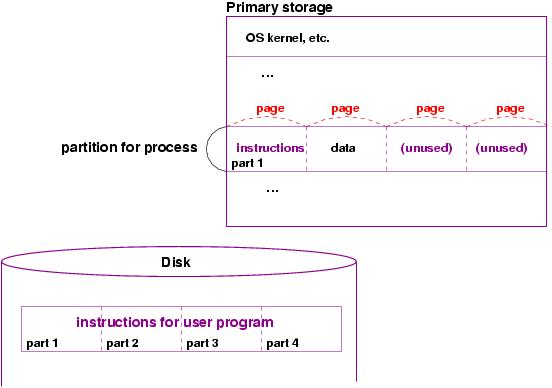

An operating system (OS) is a program that manages the computer's resources --- its CPU, primary storage, its input/output devices --- so that the resources can be correctly and fairly used by one or more persons and/or computer programs.
The OS is the program that a computer executes when first started, and it is the program that executes when a user program needs help using the computer's devices. The OS executes when there are no other programs to execute. It also executes when something goes wrong.
When started, an operating system will initialize the various registers, buffers, and controllers used by the computer. (Please see the lecture on computer architecture to review the concepts of register, buffer, and controller. Indeed, if you have not done it, please study completely the computer-architecture lecture notes.)
Here is a partial list of what an OS must manage:
The OS also provides the interrupt-handling programs that the processor executes when an input/output device signals an interrupt.
The OS must also provide a means where a program can communicate over the network to another program on another computer.
All CPU's have wired into them a tiny start-up program, called an initial program loader (IPL). When the computer is switched on, the CPU immediately starts executing the instructions in its IPL. A typical IPL checks that primary storage, the display, the disk, etc., are operational, and then it looks for other instructions to execute on the disk drive: the IPL loads and executes the instructions that begin at disk address, ``track 0, sector 0.'' These instructions from the disk tell the processor to copy the operating system's kernel into primary storage and jump to the first instruction of the kernel.
When the kernel starts, it initializes devices, creates buffers, and copies into primary storage helper programs, such as the interrupt handlers for the various storage devices. The kernel uses additional primary storage to help it manage the processor, primary storage, and other devices; the details will be developed in the later sections.
After the IPL has successfully started the OS kernel, we find primary storage looking somewhat like this:
That is, the OS kernel is loaded into storage, and the buffers and interrupt handler programs described in the lecture on architecture are present as well. (The OS kernel ensures they are placed in storage.) The window manager and other supporting OS programs are present as well, and the remaining free storage space can hold user programs.
The OS is now ready to interact with the user.
A process (also called a task) is a partly executed program. That is, once a program is copied from disk into primary storage and made eligible to execute, it becomes a process, and while it executes, it remains a process. If it is not finished, but it remains in storage while another process executes, it is still a process. Once it terminates, it is erased from primary storage. Examples of processes are
(Note: if you have not done so, it is time to review the material in the computer architecture lectures about interrupt handling.)
The CPU executes just one process, and the processes that are ready and waiting for their turn at execution are kept in a queue (a waiting line, like at the post office) in primary storage.
Here is a picture of primary storage where there are five processes: one is executing, three of them are ready and waiting for their turn to execute, and one process is ``blocked'' because it requested a disk read that is underway but not finished:
When a program is started, the operating system allocates a segment of primary storage for holding the program's instructions and its data values. The OS also contructs a structure called a process control block (PCB). A PCB remembers the process's name (ID), the instruction where its execution starts, initial values for the CPU registers when the process starts, its priority number (more on this later), and its current state. A newly created process has the state, Ready.
Each Ready process is eligible to execute, so the OS places the newly created process's ID at the end of the process queue.
The picture shows that three processes are Ready for execution. The OS keeps a table holding all the PCBs, so that the OS knows about all processes in storage. One process is executing, and its state is marked Executing in its PCB. The process that is waiting on the disk to finish work is marked Blocked, and it is not listed in the process queue.
While a process executes, the CPU clock is ticking. After some number of ticks (say, about 100 milliseconds's worth), the clock signals the control unit that the executing process's time slice has been completely used --- the clock does this by setting a bit in the interrupt register. When the control unit next checks the interrupt register, it detects the clock interrupt, and it starts the interrupt handler for the clock.
The interrupt handler for the clock does a process switch (task switch):
Here is a revised picture of storage after the executing process P3 has used all its time slice and has been replaced by the next process, P5, in the process queue:
In addition to a clock interrupt, there are two other actions that the OS takes to update the states of processes:
Here is the picture that results when the executing process P5 shown above issues a WRITE instruction and must be Blocked:
Here is the previous picture revised after process P2's disk READ finishes and the interrupt handler has done its work:
It is important to remember that IDs are inserted at the rear of the queue and removed from the front. This arrangement is fair but is altered when some processes are ``more important'' than others.
Most operating systems assign priority numbers to processes --- higher-priority processes may use the CPU more often than lower-priority ones. For example, non-graphical or ``background'' processes are given lower priorities, whereas user-started, graphical programs are given higher priorities. (The philosophy is that the human user is happier to see progress on the display.)
Processes that have been executing for a long time receive lower priorities as time elapses, as do programs that do lots of input/output with secondary-storage devices.
The priorities added to the processes are saved in the PCBs and are saved with the process's IDs in the process queue. But the priorities complicate the management of the process queue, because now a Ready process can be inserted at the rear of the queue and then moved forwards in the queue if it has a high priority.
The design of the appropriate data structure to implement this so-called priority queue is often studied in a data-structures course.
But remember that the user program, once started, is one single process, and it has one PCB. The process's time slice is shared between its threads, so there is no advantage to writing a program with multiple threads to gain more use of the CPU. Instead, multi-threaded programs are written to provide an elegant solution to a difficult problem. (Example: Implement a ``pipeline'' of two threads that solve a problem of the form, ``for each data item in a sequence, do Step1 then Step2.'')
In Java, you use threads each time you use the javax.swing graphics framework. But you don't see them in your coding --- they are constructed for each window, frame, and dialog you construct. You can start a thread yourself in Java by using new Thread(ob), where ob is an object that implements Runnable interface.
Here are the problems that can arise:
When a program is copied from disk storage into primary storage for execution, it is time to convert the variable-name addresses into actual storage-cell addresses. The OS's loader program has the job of copying the instructions from disk to primary storage and inserting the correct storage addresses for the variable names.
When a user program is started, a typical operating system will allocate a storage partition large enough to hold all the program's instructions, plus additional space for data values. But the partition size, ultimately, is a guess, and some programs will use all of its partition space to hold data values. (In an object-oriented language, an instruction like new Object(...) uses some of the storage partition for a data value. In a C-like language, malloc(...) does the same. Both of these commands start a helper program in the OS that marks as used some of the unused storage within the program's partition.)
When a user program has consumed all its storage, the OS notices and can take two actions:
The second solution is the preferred one, and it is based on the observation that all of a program's instructions need not be present in primary storage at the same time. Indeed, we need keep only the part of the program that is executing now or will execute in the near future. The same viewpoint is true for the cells used to hold data --- not all data is used all the time, and the data not recently used might be copied onto disk storage for later use.
So, a process's partition is divided into equal-sized fragments, called pages, and the instructions and data values are addressed relative to the starting point of a page; the loader program makes these adjustments when it loads a page into primary storage.
Here is a picture of a process's partition, divided into pages:
When the program is first copied (loaded) into storage, perhaps not all of it is copied --- perhaps just its first part, which executes first; the rest is left waiting on the disk. Also, perhaps some of the partition is used for data values:

When the program executes, more and more instructions are read, and perhaps all the instructions in the page are executed, and the next instruction resides on the disk and not in storage. This situation is called a page fault, and the OS must find on the disk the page that contains the next instruction. The loader loads that page into unused space in the storage partition, and execution continues:
Each time a page from disk is loaded, the loader must update the addresses in the newly loaded page so that they match correctly the addresses in primary storage where the page was loaded.
Eventually, all the partition's pages fill with instructions and data:
Now, if there is a page fault and there is no more free space in the partition, then one of existing pages must be replaced (``swapped out'') by the needed page:
Paging can also let a process construct more and more data values --- when a collection of data values have filled a page and space is needed for more new data values, then an existing page of data can be swapped out (copied to disk) to make room for a page of new data values. Ultimately, a process grows well beyond its initial storage partition.
There is a severe penalty to be paid when a program has saved too many pages on disk, and they must be continually swapped --- almost all of the process's time slice is spent on the swapping and almost none is spent on the computation. This is called thrashing. Modern operating systems allocate huge partitions for processes to reduce the possibility of thrashing.
Most computers use a memory controller (recall that this is the processor that rests between the system bus and primary storage); the controller can be programmed so that it checks, for each read/write into storage, whether the requested storage address in held within the storage partition owned by the currently executing process. If the answer is no, then the storage reference is not performed, and instead, the memory controller sets a bit in the interrupt register, signalling an address exception.
When the CPU's control unit detects the interrupt, it starts an interrupt handler that removes the process from Executing state, terminates it, and starts the next Ready process in the process queue. An error message is constructed and transmitted to whatever output device is used by the erroneous process.
To ensure this, for each input/output device, the operating system builds a queue that holds the IDs of the processes that wish to use the device. The queues are necessary because more than one process might wish to use the same device, and a typical device operates so slowly (relative to the speed of the CPU), that it is common that multiple processes use their time slices and generate requests to use the same device. This means the processes are forced to wait for their turns at using the device.
For each device, the OS contains a helper program (called a device driver) that does the physical reads and writes to the device. A user program must start the device driver to use a device; the user cannot use the device directly. (The technical description: the devices are wired so that only processes with executive privilege can start them. The OS has executive privilege; a user program does not.)
For example, an executing process might wish to write some data to the disk. The program uses an instruction of the form, WRITE(disk,address,data). This instruction is actually a request to the OS's disk device driver to do a write. The device driver checks the disk to see if another process is already using the disk. If yes, then the executing process's ID is placed into the queue for the disk, and the executing process is Blocked. If no, then the device driver copies the data and its destination address into the disk's address and data buffers and signals the disk's controller to start a write. The executing process is Blocked.
When the disk finishes the write, its controller signals the CPU by setting a bit in the interrupt vector, and this triggers the actions described earlier in the section on process management. (But now, we also realize that the interrupt handler for the disk not only moves the process from Blocked to Ready, as described earlier, but it also consults the queue for the disk to see if there is another blocked process that is waiting the use the disk. If yes, the disk is restarted for the next process in the disk's queue.)
Queues, device drivers, and start-up commands are the basic tools the OS uses for managing all input/output devices.
The operating system includes programs that impose a ``filing system'' on computer directories and files so that files on disk can be systematically stored and quickly found. Here are some basic concepts: The operating system uses a tree-like structure to organize the folders and files on disk:
The tree is saved on disk in a ``flattened'' form, where the linkages are remembered as disk addresses:
Since a disk is divided into a form of pages, called sectors, the sector addresses are used to locate folders and files. Like pages, sectors have fixed size, so if a folder's directory is too large to fit into one sector, or a file is too long to fit into one sector, links to additional sectors are used.
Tree structures are a crucial data structure to the OS and many important programs (compilers, data bases, learning programs, etc.)
File usage follows this sequence of steps:
Although disk storage shares concepts with primary storage, there is no notion of ``paging'' that a disk can use when a file is written to the disk and the file grows so large that it does not fit. At best, the disk controller can try to write the large file into several disjoint partitions on the disk and ``chain'' the partitions together. But if a disk fills, it is a disaster. The OS tries to prevent a disk from filling so much that it causes the other processes to stop.
Commands like these are part of the OS command language. The command language lets a user program or a person ask the OS for help. The command language can be inserted as instructions inside a user program (say, in a program written in C or Python) or as instructions that a human types at the keyboard. The commands are sometimes known as system calls.
Indeed, when you start a command-prompt window on your computer's display, you create a ``connection'' that lets you ``talk'' to the OS in its command language. Almost everyone has used some of the OS's file-management commands in a command window:
dir // list the files in the directory that is opened by the command window rm filename // delete the file, filename, from the directory move filename1 filename // change the name (move) filename1 to filename2 ...Within the command window, you can start various OS helper programs, for example, ask the OS to ask the clock for the current time. Or, you can tell the OS to start a user program that you have saved as a file. (This is commonly done by merely stating the program's filename.)
The window manager can also be started by an OS command (system call) that requests a window to be (re)painted; a user program uses such system calls to paint its graphical user interface on the display.
Indeed, because various processes might paint their windows on the display, the window manager must remember which regions of the display are ``owned'' by which processes. This ``ownership'' becomes important when the mouse is moved and the keyboard or mouse is pressed, because the window manager must direct the information from the keyboard or mouse press to the process that owns the region over which the press occurred.
For example, perhaps the mouse button is pressed. The mouse hardware sets the appropriate bit in the interrupt register, and the mouse interrupt handler asks the window manager which process ``owns'' the pixel over which the mouse was clicked. That process is then notified that it has received a mouse click as input. (This technique works, assuming that the process where the mouse clicked is waiting to be contacted! If it isn't, then the click is ignored and nothing happens.) The notification is is done with a system call, from the process manager to the process awaiting the mouse click. (In Java, the the system call is received by the JVM, which constructs a new Event object that it sends to an actionPerformed method.)
In a similar way, keyboard input is ``read'' by a process, one key press (interrupt) at a time, with the help of the window manager.
The previous section noted that one process might contact another by means of a system call. Indeed, processes might exchange messages using inter-process SEND and RECEIVE operations (which are like READ and WRITE operations, except that a storage device is not involved).
For reasons of efficiency, one process might exchange information with another by depositing the information into a disk file and then sending a message to the other process, telling it to look on the disk for the information.
This form of communication, by means of a shared resource (here, the disk file) quickly becomes dangerous when information is repeatedly exchanged, because the process that is depositing new information on the disk might be doing so at the same time that another process is retrieving the earlier information from the same place on the disk. This issue arises often within the coding of the programs in the operating system itself.
To help ensure correct exchange of information on shared devices, the OS kernel provides system calls for shared use of a device or file. These calls help multiple processes synchronize their actions.
A process uses the system calls somewhat like this:
GET_MUTEX(sem) // requests use of shared resource, where sem is a
// cell, called a semaphore, that remembers if the
// resource is in use. If it isn't, the execution
// proceeds. If it is, this process is Blocked.
...use shared resource ...
RELEASE_MUTEX(sem) // cell sem is reset to remember the resource is free
// If a process is Blocked, waiting on sem, the process
// is made Ready to restart
MUTEX is slang for ``mutual exclusion'' (exclusive use), and sem
is slang for ``semaphore'' (???).
Proper use of semaphores is a critical topic of study in operating systems.